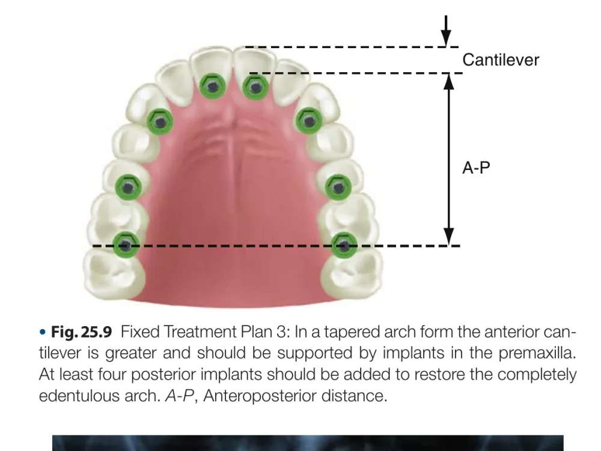
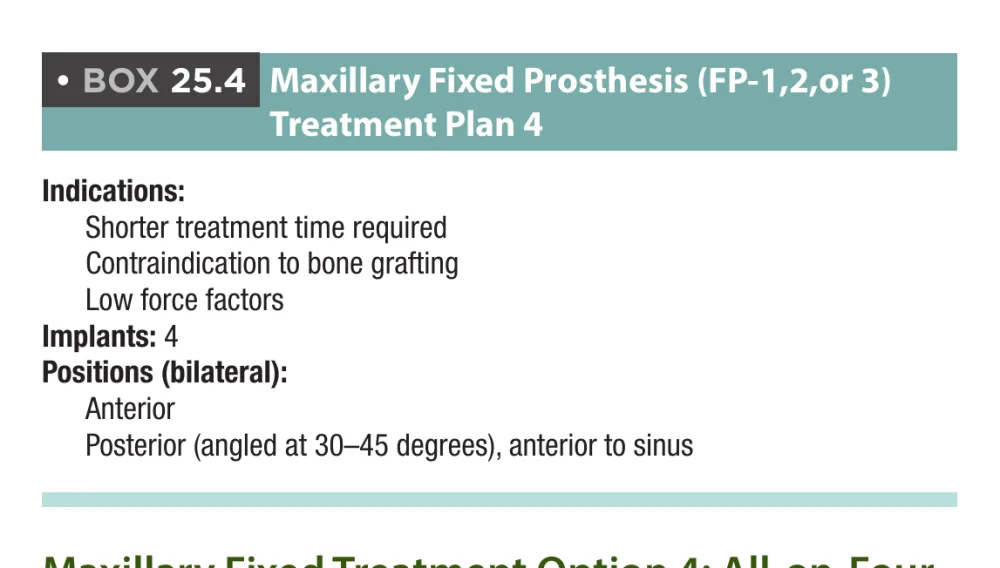

نسخه استخراجشده؛ ترجمه یا تأیید علمی انجام نشده است. وضعیت: captured
برنامهی درمانی ثابت ۳ — فرم قوس مخروطی (تیپرد).
در یک نگاه: اندیکاسیون فرم قوس مخروطی، ۸ ایمپلنت، موقعیتها (دوطرفه): انسیزور مرکزی، کانین، بایکاسپید دوم، مولر اول.
و چرا هشت؟ «پروتزی که در یک فرم قوس دندانی مخروطی طرح درمان میشود، بیشترین نیروها را بر ایمپلنتهای قدامی وارد میکند — بهویژه حین اکسکورسیونهای مندیبل وقتی استخوان باقیمانده فرم ریج بیضی یا مربعی دارد.»
و سازوکار دقیق: «دندانهای قدامی یک کانتیلور فاسیال معنادار از موقعیت کانین میسازند، و نیروهای گاز قدامی اغلب به نیروهای نوع برشی میانجامند.» — و از یونیت بارگذاری فوری میدانی استخوان در برابر برش ضعیفترین است.
پس چهار ایمپلنت باید برای جایگزینی شش دندان قدامی در نظر گرفته شوند، و بهترین گزینه موقعیتهای کانین و انسیزور مرکزی دوطرفه است.
و این موقعیتها چه زمانی ترجیح داده میشوند؟ «وقتی سایر عوامل نیرو بیشترند، مانند ارتفاع تاج، پارافانکشن، و دینامیک عضلانی جونده.»
و اکنون بدترین سناریو — که به همین نام شناخته میشود:
«بدترین سناریو بیماری است که به بازسازی یک فرم قوس دندانی مخروطی با یک فرم ریج باقیماندهی مربعی نیاز دارد.»
چرا؟ «نهتنها آنگاه چهار ایمپلنت برای جبران موقعیت کانتیلورشدهی دندان ایدهآل لازم است، بلکه این ایمپلنتها باید به ایمپلنتهای خلفی اضافی متصل شوند که میتوانند تا محلهای مولر دوم گسترش یابند.»
ببین چه اتفاقی افتاد: ریج مربعی است (کانتیلور طبیعی کم)، ولی دندان باید مخروطی چیده شود (کانتیلور زیاد). یعنی اختلاف میان ریج و دندان به حداکثر میرسد — و همان «عامل نیروی قدامی ناشی از اختلاف کانتیلورشده» که در درس ۱ دیدی، اینجا در بدترین شکلش ظاهر میشود.
و قاعدهی افزایش: «در برنامهی درمانی ۳، وقتی عوامل نیرو متوسط باشند یا فرم قوس دندانی مخروطی باشد، حداقل شمار ایمپلنت باید به هشت افزایش یابد.»
و اگر شرایط از این هم بدتر باشد؟ «وقتی عوامل نیرو بیش از حد معمول باشند یا تراکم استخوان ضعیفتر باشد، ایمپلنتهای اضافی میتوانند در هر یک از فرمهای قوس استفاده شوند:
و چرا مولر دوم؟ «این به فاصلهی A-P افزایشیافته در مقایسه با محل مولر اول میانجامد، که عوامل نیروی افزوده یا تراکم استخوان ضعیف را جبران میکند.»
و یک کاربرد دیگر همین راهنما: «راهنمای شمار و موقعیت ایمپلنت همچنین ممکن است اثر کانتیلور انسیزال از استخوان قدامی باقیمانده را برای یک موقعیت زیبای دندان خنثی کند، و برای بیماران با پارافانکشن مزمن مانند برایکسیسم اندیکاسیون دارد.»
و معایب ایمپلنت مولر دوم — که صادقانه باید شمرد:
و پاسخ به این ایراد آخر، نکتهی کلیدی است: «دلیل این موقعیت ایمپلنت، انتقال نیرو است — نه لزوماً اهداف زیبایی یا عملکردی.» — یعنی حتی اگر دندان مقابلی نباشد، آن ایمپلنت کار خودش را میکند: بردن مرز خلفی A-P به عقب.

«در دندانپزشکی ایمپلنت امروز، چرخشی در گزینههای درمانی رایج شده تا زمان درمان، هزینهی درمان و موربیدیتی بیمار به حداقل برسد.» و مفهوم All-on-4 کوششی برای همین اهداف است.
ساختار در ماگزیلا: چهار ایمپلنت در قوس ماگزیلا — دو ایمپلنت محوری در قدام و دو ایمپلنت خلفی با زاویهی ۳۰ تا ۴۵ درجه.
و اکنون تضاد جالب این بخش: «هرچند جایگذاری چهار ایمپلنت بسیار کمتر از آن چیزی است که سالها پذیرفته شده بود — یعنی معمولاً شش تا هشت ایمپلنت برای پروتز ثابت در ماگزیلا لازم است — نرخهای موفقیت بالای ۹۳ تا ۹۸ درصد نشان داده شدهاند.»
پس چطور چهار ایمپلنت جای هشت را میگیرد؟ دو دلیل دارد:
یعنی هر دو ضعف ماگزیلا همزمان دور زده میشوند: ضعف کیفیت استخوان خلفی با رفتن به قدام، و ضعف هندسه با زاویه دادن. این همان چیزی است که چهار ایمپلنت را ممکن میکند — نه چیزی دربارهی خود عدد چهار.
و شواهد محاسباتی: یک مدل تحلیل اجزای محدود نشان داده است ایمپلنتهای خلفی زاویهدار در مقایسه با کانتیلور کردن از ایمپلنتهای محوری، مزیت بیومکانیکی دارند.
برنامهی درمانی ۴ در یک نگاه:
به اندیکاسیون سوم دقت کن — «عوامل نیروی پایین». این یعنی All-on-4 ماگزیلا جایگزین برنامهی ۳ نیست. برنامهی ۳ برای عوامل نیروی متوسط تا بالا هشت ایمپلنت میخواست؛ All-on-4 دقیقاً در نقطهی مقابل آن مینشیند. دو طرح برای دو بیمار متفاوتاند، نه دو نسخه از یک طرح.
و مزیتی که در ماگزیلا اهمیت ویژه دارد: «بهدلیل پنوماتیزاسیون سینوسهای ماگزیلا و نیاز به گرافت استخوان در بسیاری موارد، تکنیک All-on-4 اجازهی پرهیز از آناتومی سینوس با زاویه دادن به ایمپلنتها را میدهد، که در نهایت A-P spread را افزایش میدهد.»
و یک قید جایگذاری: دو ایمپلنت خلفی با زاویهی کمتر از ۴۵ درجه قرار میگیرند تا از سینوس ماگزیلا پرهیز شود. و موقعیت خلفی در این برنامه «قدامِ سینوس» است — یعنی هدف زاویه دادن، رسیدن به استخوان پیش از سینوس است، نه عبور از آن.
و رابطهاش با یونیت بارگذاری فوری: «تکنیک All-on-4 رایجترین کاربردش در وضعیتهای بارگذاری فوری است» — یعنی همان بارگذاری فوری که در یونیت ۳٫۴ خواندی.
و پیش از بستن این یونیت، مقایسهی سه گزینهی پروتز ماگزیلا — که کل تصمیم ثابت در برابر متحرک را در یک نگاه جمع میکند.
سه گزینه در نُه شاخص مقایسه میشوند، با مقیاس +++ بهترین، ++ بهتر، + خوب:
و اکنون خواندن درست این جدول: پروتز ثابت در پنج شاخص از نُه بهترین است و در یکی مساوی. اما در دو شاخص بازنده است — و همان دو، تصادفی نیستند:
و همین دو، تمام منطق مانور تشخیصی درس ۱ را توضیح میدهند: برداشتن فلنج لبیال دنچر موجود، دقیقاً برای سنجیدن همان شاخصی است که پروتز ثابت در آن ضعیفترین است. اگر بیمار در آن شاخص نیاز جدی داشته باشد، برتری پنجشاخصی پروتز ثابت او را راضی نخواهد کرد.
و به تساوی زیبایی هم دقت کن: هر سه گزینه ++ گرفتهاند. یعنی در این مقایسه، زیبایی بهتنهایی دلیل انتخاب پروتز ثابت نیست — دلایل واقعی روانشناسی، فونتیک، عملکرد، نیروی گاز و موفقیت درازمدتاند.
و نتیجهگیری متعادل:
«تکنیک All-on-4 نتایج بسیار امیدبخشی در ادبیات نشان داده است. با این حال، انتخاب دقیق بیمار، همراه با یک پزشک باتجربهی جراحی و پروتزی با مجموعهمهارت افزوده، برای نتایج درمانی موفق ضروری است.» — همان هشداری که برای All-on-4 مندیبل هم آمده بود.
